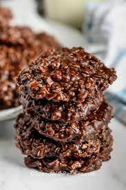

No-Bake Cookies Recipe
Recipes

Here's a great No-Bake Cookie recipe:
Ingredients:
- 2 cups white sugar
- 1/2 cup butter
- 1/4 cup unsweetened cocoa powder
- 1 teaspoon vanilla extract
- 1/2 cup milk
- 1 pinch of salt
Steps:
-
In a saucepan, combine the sugar, cocoa,
butter, and milk and bring to a boil over
medium heat.
-
Boil for 1 minute, then kill the heat and
stir in the remaining ingredients.
-
Poor onto baking sheet in small, cookie
sized "puddles".
-
Let cool, and enjoy!!!